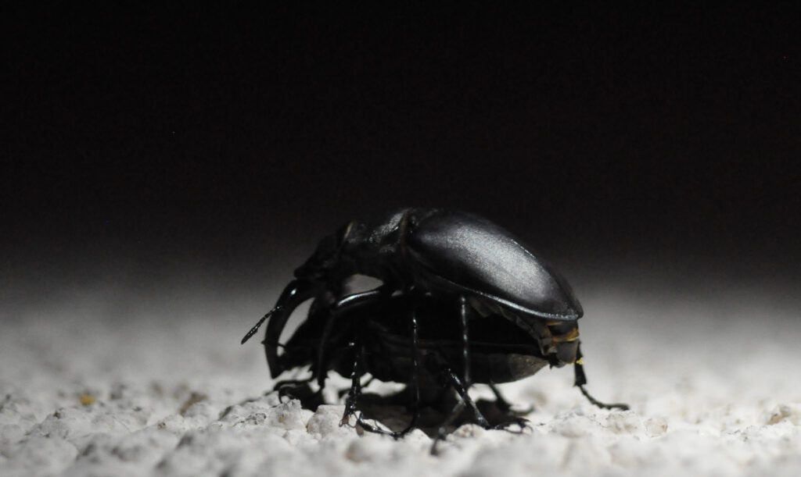

Voilà un des Insectes les plus impressionnants de France. Par sa taille d’abord, jusqu’à 8 cm de longueur pour le mâle ! Par son allure ensuite : les 2 mandibules du mâle sont énormes, ce qui lui vaut le nom de « Cerf-volant ». La femelle (« la Biche ») est en général plus petite, et aux mandibules moins développées. Il y a donc un dimorphisme sexuel très marqué.
Rappelons que les mandibules sont des pièces buccales puissantes chez les Insectes, et les Coléoptères en particulier. Leur rigidité est obtenue grâce à une cuticule épaisse, faite de protéines tannées, constituant l’exosquelette de l’animal.
Lucanus cervus (son nom scientifique) est un Coléoptère, de la famille des Lucanidae. Coléos signifie « étui », en référence à la première paire d’ailes avant, rigide, assurant une protection de l’animal, un peu comme une carapace. Seule la deuxième paire d’aile sert au vol.
Il est possible de voir des Lucanes en juin/juillet, au crépuscule. Les mâles volent à la recherche de femelles, qui grimpent en général le long des troncs. La femelle attire les mâles en projetant des excréments…Si plusieurs mâles sont présents, des combats peuvent avoir lieu (sélection sexuelle). Le vainqueur rejoint la femelle et se pose dessus. La copulation permet le dépôt de spermatozoïdes au niveau de l’organe copulateur femelle. La photographie montre bien le contact entre l’extrémité de l’abdomen du mâle, courbée vers le bas, et l’extrémité de l’abdomen de la femelle. Les ovules seront fécondés dans l’organisme de la femelle, qui pondra ses oeufs dans le sol un peu plus tard.
Les larves se développent pendant 5 à 8 ans dans les vieux arbres morts ou malades (chênes et châtaigniers essentiellement). Après la métamorphose, l’imago (= jeune adulte) éclôt à l’automne, et reste en terre jusqu’au printemps suivant.
La photographie d’accouplement a été prise un 4 juillet, vers 22h, à Saint-Étienne (en pleine ville ! ), sur un mur de maison (vertical, la photographie a donc été tournée).
Pour en savoir plus :
https://inpn.mnhn.fr/espece/cd_nom/10502
Bibliographie :
Coléoptères de France – Tome I – Boubée 1976
Guide Vigot des Insectes et des principaux Arachnides – Vigot 2000